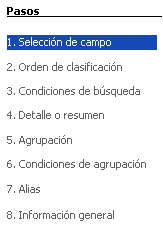
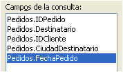
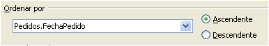
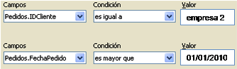
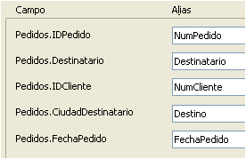

Tecnología de la Información y la Comunicación: Bases de datos
4.1.1. Asistente
Importante
El Asistente para la creación de consultas es una herramienta que facilita la selección de los campos y el establecimiento de las condiciones de la consulta sin necesidad de entrar en el diseño.
El asistente para la creación de consultas permite la realización de consultas sencillas en ocho pasos. Parece un proceso largo, pero la mayoría de los pasos son similares a los ya usados en el asistente de creación de tablas (y se repetirán en los otros asistentes).
|  |
| Pasos del asistente |
- En cada tabla implicada en la consulta se pueden seleccionar distintos campos.
- Orden de visualización según uno o varios campos.
- Valor de búsqueda o comparación para el campo o campos consultados.
- Vista resumen de las condiciones de búsqueda.
- Agrupación de registros según un campo.
- Condiciones de agrupación.
- Asignar los nombres para visualizar los campos en la consulta.
- Resumen general de la consulta.
Parece complicado, pero se trata de un asistente, es decir, es un secretario que va preguntando qué hacer con cada elemento de la consulta.
Caso práctico
Ya tienes la tabla Pedidos creada. Ahora vas a realizar la consulta Pedidos_año utilizando el asistente.
Sigue los pasos que marcan estas imágenes y ... ¡Buena suerte!
| 1) |
 Selección de campos |
| 2) |
 Ordenar según el campo ... |
| 3) |
 Condiciones de la consulta |
| 4) |
 Establecer alias de campos |
Comprueba lo aprendido
Respondiendo a estas preguntas, podrás explicar el proceso tú mismo.
Para saber más
Al escribir la fecha 01/01/2010 en el paso de establecimiento de las condiciones, automáticamente aparece el valor 40179.
¿Por qué aparece este valor? ¿Qué significa?
En la unidad anterior, se han estudiado las hojas de cálculo en OOo Calc. Por tanto, ya sabes que las fechas se cuentan como números naturales a partir del 31/12/99, al que se asigna el número 1.
Abre OOo Calc y comprueba que el 40179 corresponde al 01/01/10.